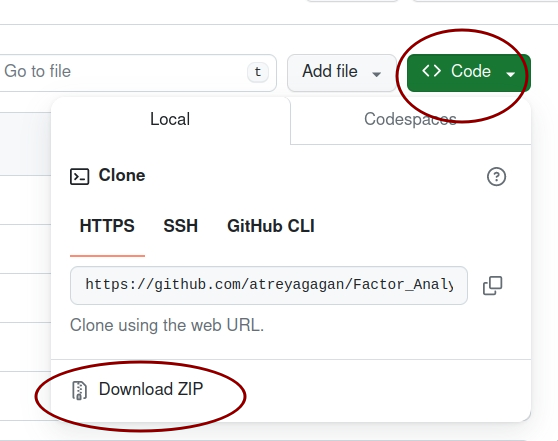
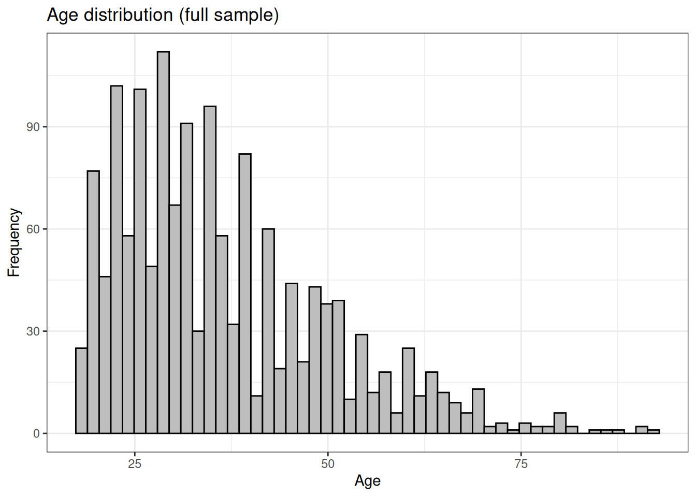
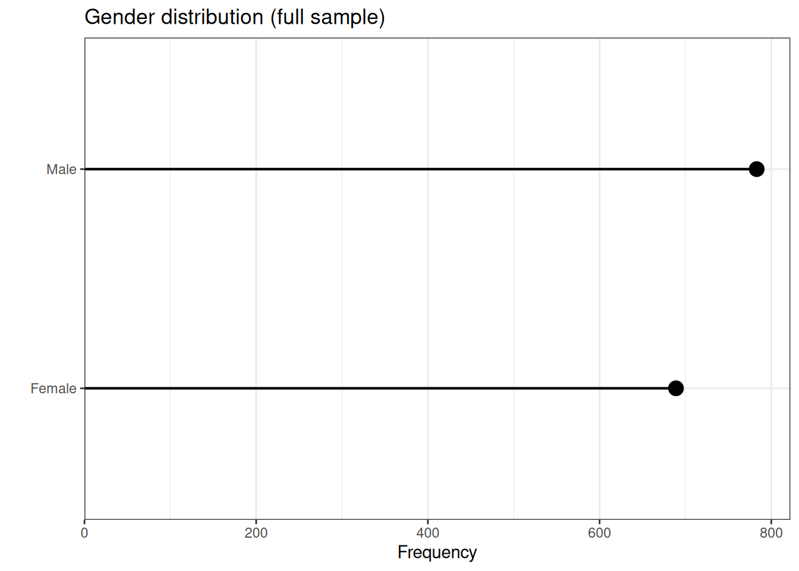
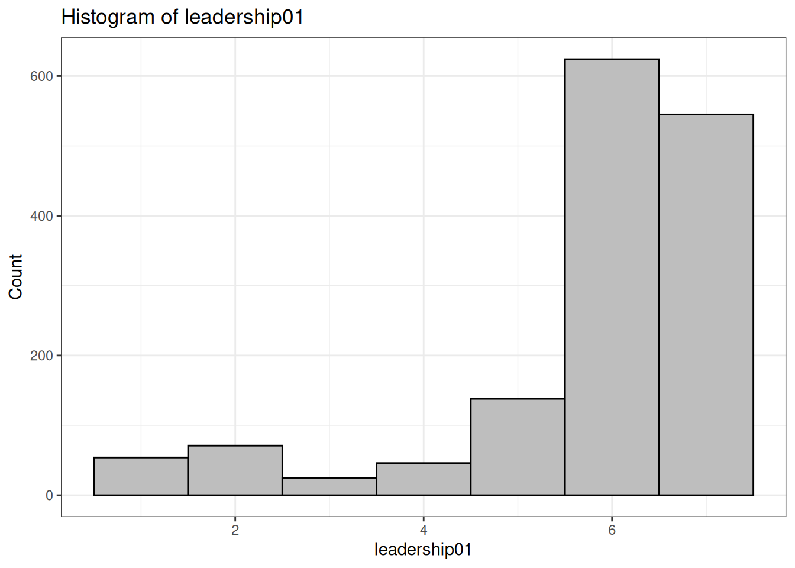
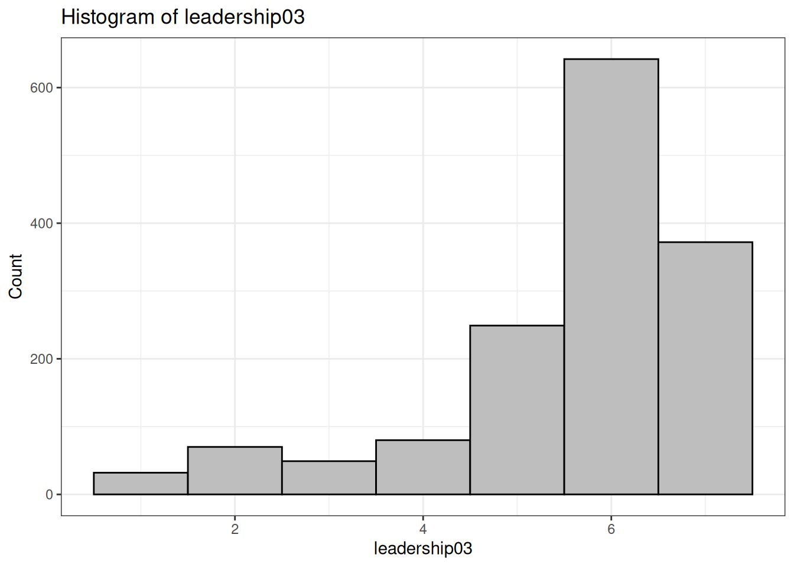
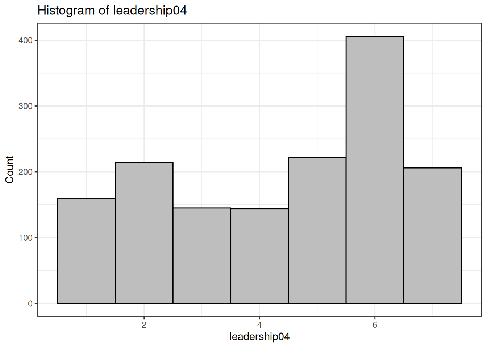
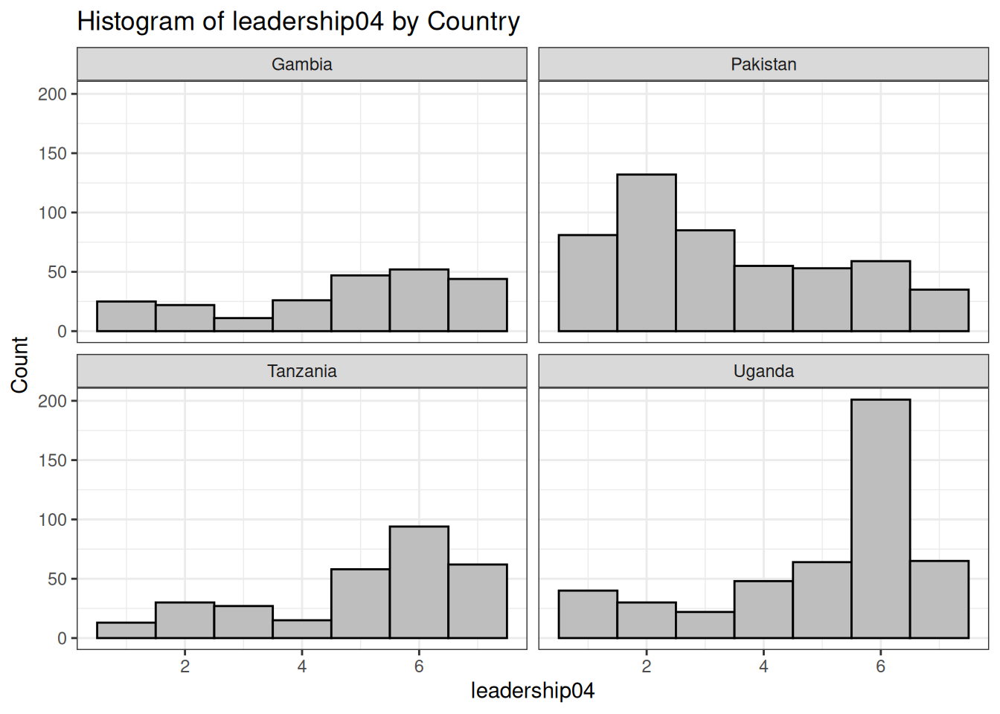
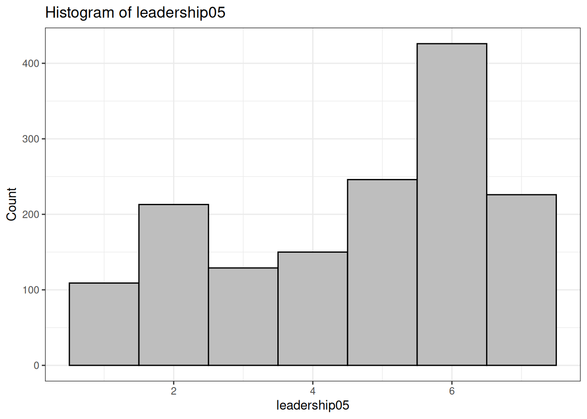
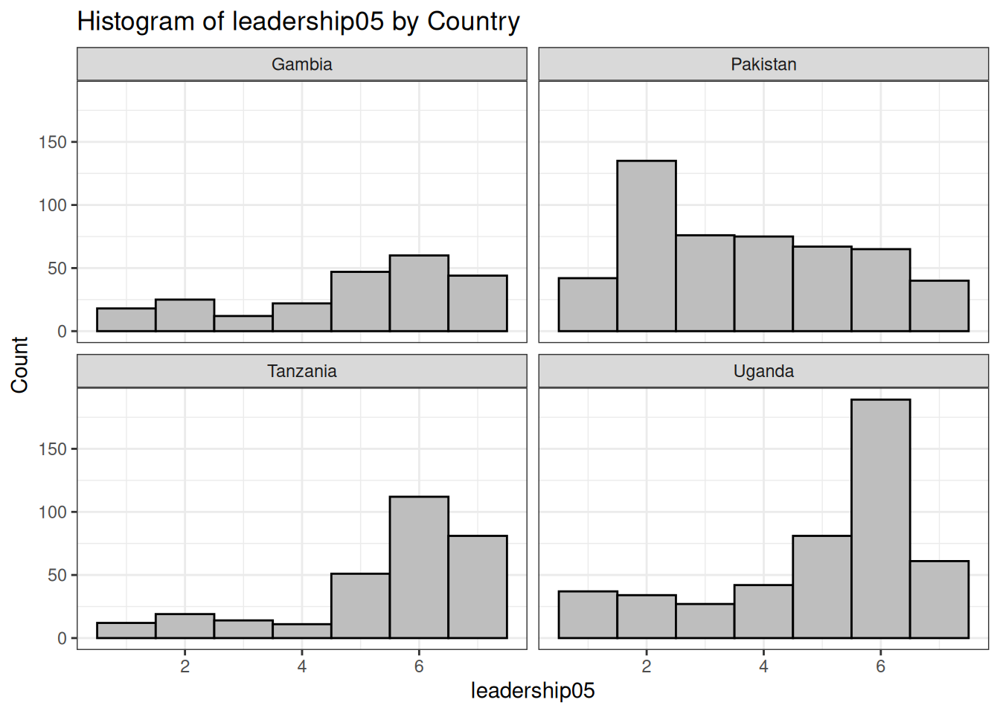
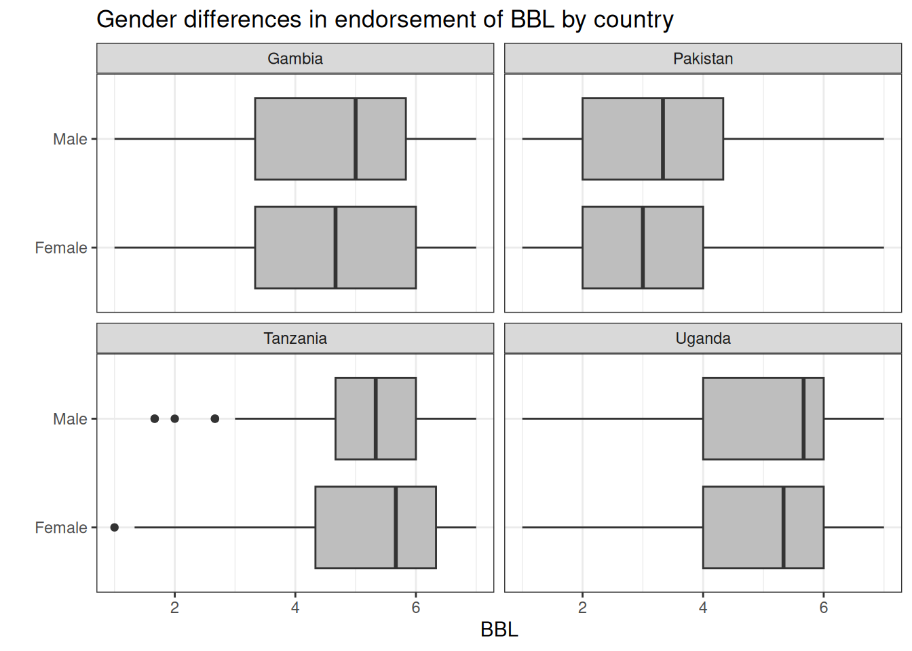

Github repo: Download all workshop contents from here.

Tasks today
This will be an applied workshop, with very little math/theory behind Factor Analysis
Refer to the two readings (pdf files) in the github repo for more detailed disussions on the math behind EFA and CFA
Rather, we will use an original dataset and go through the step-by-step of conducting Exploratory Data Analysis/Visualization, followed by Exploratory Factor Analysis and Confirmatory Factor Analysis, and see how they differ practically.
Think of this as a guide that you can refer to later, more than a detailed discussion about the math behind FA/SEM etc.
Section 2. Introduction to the data / EDA
Original cross-country survey conducted across four countries:
Gambia, Pakistan, Tanzania, Uganda
We will examine what people think about how “group leaders” should behave
We will do this by reducing survey responses to coherent constructs or “factors”
Display code
## Clear R environment:rm(list=ls())## Set digit options:options(digits =2)## Set the working directory## Use the project directory (downloaded from GitHub) as the working directory:## [This is going to be different depending on your system]:setwd("~/Desktop/factor_analysis_R_workshop/")## Install/load R libraries using the "pacman" R package:## This is easier than library(package1), library(package2), etc..if (!require("pacman")) install.packages("pacman")pacman::p_load(tidyverse, lavaan, vtable, psych, scales, corrplot, ggthemes, ggcharts, patchwork)## Import the dataset that we will be using for the workshop:ds <-read_csv("data/fa_dataset.csv", show_col_types = F)## Briefly go over the dataset, variables, codebook, etc. # vtable(ds)
Demographic variables for EDA:
Country
Age
Gender
Socio-economic status
Religious affiliation
Marital status
Education
Variable: Sample size by Country
Display code
## Variable: Sample size by Countrytbl01 <-table(ds$country)tbl01
Min. 1st Qu. Median Mean 3rd Qu. Max. NA's
18 26 33 36 45 92 9
Display code
ds %>%drop_na(age)%>%ggplot(aes(x = age))+geom_histogram(color ="black",fill ="gray",bins =50)+labs(x ="Age", y ="Frequency", title ="Age distribution (full sample)")+theme_bw()

Display code
ds %>%drop_na(age)%>%ggplot(aes(x = age))+geom_histogram(color ="black",fill ="gray",bins =50)+labs(x ="Age", y ="Frequency", title ="Age distribution by country")+facet_wrap(~country, nrow =2)+theme_bw()
Variable: Gender
Display code
## Gender distribution by countrylp02 <- ds %>%drop_na(gender, age) %>%lollipop_chart(x = gender,line_color ="black",point_color ="black")+labs(y ="Frequency",x ="",title ="Gender distribution (full sample)")+theme_bw()lp02

Display code
## Age and gender by country:bp01 <- ds %>%drop_na(gender, age) %>%ggplot(aes(y = age, x = gender))+geom_boxplot(fill ="grey")+labs(y ="Age",x ="",title ="Age and gender distribution by country")+facet_wrap(~country, nrow =2)+coord_flip()+theme_bw()bp01
Bachelors Certificate Diploma High school or less
186 34 54 856
Masters or above No schooling Other/unknown
221 22 133
Display code
ds$education <-factor(ds$education, levels =c("No schooling", "High school or less","Diploma", "Certificate", "Bachelors", "Masters or above", "Other/unknown"))table(ds$education)
No schooling High school or less Diploma Certificate
22 856 54 34
Bachelors Masters or above Other/unknown
186 221 133
### Items:### To what extent do you agree with the following statements? ### (1- Strongly Disagree to 7- Strongly Agree)### Good leaders should:### Leadership item 01:### Seek out opportunities to bridge social divisions with their opponents, enemies, opposition groups, or other relevant outgroups.# Visualize with histogram using functions in R # We can use the same function for subsequent itemshistfx01 <-function(data, x_variable) {ggplot(data, aes(x =!!sym(x_variable))) +geom_histogram(fill ="gray", color ="black", bins =7) +labs(title =paste("Histogram of", x_variable),x = x_variable,y ="Count")+theme_bw()}histfx02 <-function(data, x_variable) {ggplot(data, aes(x =!!sym(x_variable))) +geom_histogram(fill ="gray", color ="black", bins =7) +labs(title =paste("Histogram of", x_variable, "by Country"),x = x_variable,y ="Count")+facet_wrap(~country, nrow =2)+theme_bw()}histfx01(ds, "leadership01")

Display code
histfx02(ds, "leadership01")
Display code
## Leadership item 02:# Demonstrate willingness to compromise with their opponents, enemies, # opposition groups, or other relevant outgroups. summary(ds$leadership02)
Min. 1st Qu. Median Mean 3rd Qu. Max. NA's
1.0 5.0 6.0 5.6 7.0 7.0 5
Display code
histfx01(ds, "leadership02")
Display code
histfx02(ds, "leadership02")
Display code
## Leadership item 03:# Try to understand and empathize with their opponents, enemies, # opposition groups, or other relevant outgroups. summary(ds$leadership03)
Min. 1st Qu. Median Mean 3rd Qu. Max. NA's
1.0 5.0 6.0 5.6 6.0 7.0 12
Display code
histfx01(ds, "leadership03")

Display code
histfx02(ds, "leadership03")
Display code
## Leadership item 04:# Try to accurately represent the interests of the communities and groups # that they belong to. summary(ds$leadership04)
Min. 1st Qu. Median Mean 3rd Qu. Max. NA's
1.0 3.0 5.0 4.4 6.0 7.0 10
Display code
histfx01(ds, "leadership04")

Display code
histfx02(ds, "leadership04")

Display code
## Leadership item 05:# Seek out opportunities to build stronger connections within the # communities and groups they belong to.summary(ds$leadership05)
Min. 1st Qu. Median Mean 3rd Qu. Max. NA's
1.0 3.0 5.0 4.6 6.0 7.0 7
Display code
histfx01(ds, "leadership05")

Display code
histfx02(ds, "leadership05")

Display code
## Leadership item 06:# Promote the interests of the communities and groups they belong to # even at the expense of other competing groups.summary(ds$leadership06)
Min. 1st Qu. Median Mean 3rd Qu. Max. NA's
1.0 2.0 4.0 4.1 6.0 7.0 4
Display code
histfx01(ds, "leadership06")
Display code
histfx02(ds, "leadership06")
Display code
## Factor Analysis of group leadership endorsement ##### Create a "leadership" dataframe:## Which has all 6 leadership items:leadership <-cbind.data.frame(ds$leadership01, ds$leadership02, ds$leadership03, ds$leadership04, ds$leadership05, ds$leadership06)names(leadership)
Refer to codebook to see if these factors are “coherent”
Factor 01:
Item 1: Seek out opportunities to bridge social divisions with their opponents, enemies, opposition groups, or other relevant outgroups.
Item 2: Demonstrate willingness to compromise with their opponents, enemies, opposition groups, or other relevant outgroups.
Item 3: Try to understand and empathize with their opponents, enemies, pposition groups, or other relevant outgroups.
Call this factor: “Barrier Crossing Leadership”
Factor 02:
Item 1: Try to accurately represent the interests of the communities and groups that they belong to.
item 2: Seek out opportunities to build stronger connections within the communities and groups they belong to.
item 3: Promote the interests of the communities and groups they belong to even at the expense of other competing groups.
Call this factor: “Barrier bound leadership”
Interpreting EFA output:
The promax rotated FA output suggests that there are two factors:
Factor 1 = Barrier Crossing Leadership (BCL). Made up of items 01, 02, 03
Factor 2 = Barrier Bound Leadership (BBL) Made up of items 04, 05, 06.
The two factors cumulatively explain 53% of the variance in the data.
Factor 1 (BCL) explains 29% of the variance, Factor 2 (BBL) explains 24%
Section 4. Confirmatory Factor Analysis
Why CFA?
EFA: “letting the data guide you”
CFA: a priori theory based.
We have expectations about the number of factors, how the factor structures should look like, etc.
EFA: tells you how many factors to retain
CFA: you already know how many factors to retain, so you test how close your data fits with expectations
CFA has its roots in Structural Equation Modeling, where we model “latent variables”
In practice, they are rarely different quantitatively.
Display code
## Create two factor structure:twofacs <-'BCL =~ leadership01+leadership02+leadership03 BBL =~ leadership04+leadership05+leadership06'## Fit the model:cfa01 <-cfa(twofacs, data = leadership, std.lv =TRUE) summary(cfa01,fit.measures =TRUE,standardized =TRUE)
lavaan 0.6.16 ended normally after 25 iterations
Estimator ML
Optimization method NLMINB
Number of model parameters 13
Number of observations 1476
Model Test User Model:
Test statistic 21.210
Degrees of freedom 8
P-value (Chi-square) 0.007
Model Test Baseline Model:
Test statistic 2402.992
Degrees of freedom 15
P-value 0.000
User Model versus Baseline Model:
Comparative Fit Index (CFI) 0.994
Tucker-Lewis Index (TLI) 0.990
Loglikelihood and Information Criteria:
Loglikelihood user model (H0) -16095.064
Loglikelihood unrestricted model (H1) -16084.459
Akaike (AIC) 32216.128
Bayesian (BIC) 32284.990
Sample-size adjusted Bayesian (SABIC) 32243.693
Root Mean Square Error of Approximation:
RMSEA 0.033
90 Percent confidence interval - lower 0.016
90 Percent confidence interval - upper 0.051
P-value H_0: RMSEA <= 0.050 0.937
P-value H_0: RMSEA >= 0.080 0.000
Standardized Root Mean Square Residual:
SRMR 0.024
Parameter Estimates:
Standard errors Standard
Information Expected
Information saturated (h1) model Structured
Latent Variables:
Estimate Std.Err z-value P(>|z|) Std.lv Std.all
BCL =~
leadership01 0.866 0.043 20.328 0.000 0.866 0.575
leadership02 1.172 0.045 26.130 0.000 1.172 0.786
leadership03 0.983 0.042 23.573 0.000 0.983 0.688
BBL =~
leadership04 1.403 0.050 28.015 0.000 1.403 0.707
leadership05 1.457 0.048 30.557 0.000 1.457 0.767
leadership06 1.662 0.051 32.867 0.000 1.662 0.820
Covariances:
Estimate Std.Err z-value P(>|z|) Std.lv Std.all
BCL ~~
BBL -0.039 0.033 -1.182 0.237 -0.039 -0.039
Variances:
Estimate Std.Err z-value P(>|z|) Std.lv Std.all
.leadership01 1.519 0.069 22.110 0.000 1.519 0.670
.leadership02 0.848 0.079 10.670 0.000 0.848 0.382
.leadership03 1.073 0.065 16.558 0.000 1.073 0.526
.leadership04 1.969 0.096 20.462 0.000 1.969 0.500
.leadership05 1.486 0.087 16.995 0.000 1.486 0.412
.leadership06 1.340 0.101 13.208 0.000 1.340 0.327
BCL 1.000 1.000 1.000
BBL 1.000 1.000 1.000
Interpreting lavaan CFA output
Model chi-square = 21.210, p < 0.05.
Comparative Fit Index (CFI) = 0.994.
Fit statistic that ranges between 0 and 1.
Takes into account Model chi-square.
In essence, you are comparing a “baseline” model with the model that you fit.
Rule of thumb: CFI > 0.9 indicates good fit.
Tucker-Lewis Index (TLI) = 0.990
Similar to CFI, but less sensitive to sample size.
Takes into account relative chi-square (normalized chi square).
Rule of thumb: the closer to 1 means better.
Root mean square error of approximation (RMSEA)
“Absolute” measure of fit.
Rule of thumb:
RMSEA =< 0.05 indicates good fit.
RMSEA >= 0.10 indicates poor fit.
Often the output can be messy, so we can take into account all the model fit statistics:
p value of Model chi-square < 0.05.
CFI > 0.99
TLI = 0.99
RMSEA < 0.05
All of this indicates that our model is a good fit. We can reasonably conclude there are two factors or dimensions on how people judge leadership qualities in this data.
Section 5. After Factor Analysis: Reliability Analysis and Visualization
We have established a two factor structure. Both EFA and CFA results suggest the same thing.
Now, we can examine the “reliability” or “internal validity” of the two constructs represented by the two factors.
Does it measure what it says it measures?
How well do the items go together?
How closely related are the set of items as a group?
Different from “external validity” or “generalizability”
Reliability analysis
Call: psych::alpha(x = BBL)
raw_alpha std.alpha G6(smc) average_r S/N ase mean sd median_r
0.81 0.81 0.74 0.59 4.3 0.0085 4.4 1.7 0.58
95% confidence boundaries
lower alpha upper
Feldt 0.79 0.81 0.83
Duhachek 0.79 0.81 0.83
Reliability if an item is dropped:
raw_alpha std.alpha G6(smc) average_r S/N alpha se var.r med.r
ds$leadership04 0.77 0.77 0.63 0.63 3.4 0.012 NA 0.63
ds$leadership05 0.74 0.74 0.58 0.58 2.8 0.014 NA 0.58
ds$leadership06 0.71 0.71 0.55 0.55 2.4 0.015 NA 0.55
Item statistics
n raw.r std.r r.cor r.drop mean sd
ds$leadership04 1496 0.84 0.83 0.69 0.63 4.4 2.0
ds$leadership05 1499 0.85 0.85 0.74 0.66 4.6 1.9
ds$leadership06 1502 0.87 0.87 0.77 0.69 4.1 2.0
Non missing response frequency for each item
1 2 3 4 5 6 7 miss
ds$leadership04 0.11 0.14 0.10 0.1 0.15 0.27 0.14 0.01
ds$leadership05 0.07 0.14 0.09 0.1 0.16 0.28 0.15 0.00
ds$leadership06 0.13 0.18 0.11 0.1 0.13 0.24 0.11 0.00
Display code
summary(alph02)
Reliability analysis
raw_alpha std.alpha G6(smc) average_r S/N ase mean sd median_r
0.81 0.81 0.74 0.59 4.3 0.0085 4.4 1.7 0.58
Interpretation of reliability analysis output
Crohnbach’s alpha:
Closer to 1 is better. Minimum of 0.70, ideally greater than 0.80.
Sensitive to item numbers. More items means greater alpha.
Reliability if an item is dropped:
How is the scale/construct affected if this item is dropped?
Item statistics:
Correlation between the item and the scale (item-total correlation)
raw.r = raw correlation
r.drop = correlation with the scale after item is dropped
r.cor = correlation taking into account overlap between item and scale and reliability
ideally, item and scale should be correlated
Visualize BCL/BBL
We can also visualize the two constructs and how they differ across countries.
Compute internal validity of BBL:
Display code
## Create the actual construct, which is the average of three items:ds$BCL <- (ds$leadership01+ds$leadership02+ds$leadership03)/3ds$BBL <- (ds$leadership04+ds$leadership05+ds$leadership06)/3## Visualize barrier crossing leadership:summary(ds$BCL)
Min. 1st Qu. Median Mean 3rd Qu. Max. NA's
1.0 5.0 6.0 5.7 6.3 7.0 16
Min. 1st Qu. Median Mean 3rd Qu. Max. NA's
1.0 3.0 4.7 4.3 6.0 7.0 19
Display code
histfx01(ds, "BBL")
Display code
histfx02(ds, "BBL")
We can also examine how BCL and BBL vary by country and gender (or any other variable that we might be curious about)
Display code
bp02 <- ds %>%drop_na(BCL, BBL, gender) %>%ggplot(aes(y = BCL, x = country))+geom_boxplot(fill ="grey")+labs(y ="BCL",x ="",title ="Endorsement of BCL by country")+coord_flip()+theme_bw()bp02
Display code
bp03 <- ds %>%drop_na(BCL, BBL, gender) %>%ggplot(aes(y = BCL, x = gender))+geom_boxplot(fill ="grey")+labs(y ="BCL",x ="",title ="Gender differences in endorsement of BCL by country")+facet_wrap(~country, nrow =2)+coord_flip()+theme_bw()bp03
Display code
bp04 <- ds %>%drop_na(BCL, BBL, gender) %>%ggplot(aes(y = BBL, x = country))+geom_boxplot(fill ="grey")+labs(y ="BBL",x ="",title ="Endorsement of BBL by country")+coord_flip()+theme_bw()bp04
Display code
bp05 <- ds %>%drop_na(BCL, BBL, gender) %>%ggplot(aes(y = BBL, x = gender))+geom_boxplot(fill ="grey")+labs(y ="BBL",x ="",title ="Gender differences in endorsement of BBL by country")+facet_wrap(~country, nrow =2)+coord_flip()+theme_bw()bp05

Section 6. Conclusion
In this workshop, we used original survey data on attitudes towards group leadership across four countries and conducted:
Exploratory Data Analysis and Visualization
Exploratory Factor Analysis
Confirmatory Factor Analysis
Reliability Analysis
We can use the same general principles for other contexts where Factor Analysis (either EFA or CFA) can be used.
Section 7. Exercise
This was a neat example where our factors lined up nicely. However, real world data can sometimes (often) be messy.
Use the “exercise” dataset which contains attitudes of Americans towards different groups
Conduct EFA
Justify the number of factors
Conduct CFA
Conduct Reliability Analysis and Visualization
Feel free to email me with questions/comments.
End of File
Source Code
---title: "Workshop: Factor Analysis in R"author: Gagan Atreyadate: "February 1, 2024"format: html: toc: true toc-location: left toc-depth: 4 theme: lumen fontsize: large code-fold: true code-tools: true code-summary: "Display code" code-overflow: wrapeditor: markdown: wrap: 72---# **Section 1. Introduction **- This workshop will cover the basics of Factor Analysis (both Exploratory and Confirmatory) in the R programming language- Ideally for people with beginner/intermediate familiarity with R and/or interest in psychometrics / survey data analysis - About me: Data Scientist / Quantitative Social Scientist based in Los Angeles, California- [Github](https://github.com/atreyagagan){target="blank"}- [Linkedin](https://www.linkedin.com/in/gagan-atreya-1170202a2/){target="blank"}- [Email: atreyagagan@gmail.com](mailto:atreyagagan@gmail.com?){target="blank"}## Data and code for this workshop - Github repo: Download all workshop contents from [here](https://github.com/atreyagagan/Factor_Analysis_R_Workshop){target="blank"}. {#id .class width=60% height=60%}## Tasks today - This will be an applied workshop, with very little math/theory behind Factor Analysis- Refer to the two readings (pdf files) in the github repo for more detailed disussions on the math behind EFA and CFA- Rather, we will use an original dataset and go through the step-by-step of conducting Exploratory Data Analysis/Visualization, followed by Exploratory Factor Analysis and Confirmatory Factor Analysis, and see how they differ practically. - Think of this as a guide that you can refer to later, more than a detailed discussion about the math behind FA/SEM etc. # **Section 2. Introduction to the data / EDA **- Original cross-country survey conducted across four countries:- Gambia, Pakistan, Tanzania, Uganda- We will examine what people think about how "group leaders" should behave - We will do this by reducing survey responses to coherent constructs or "factors"```{r, error = F, message = F, warning = F}## Clear R environment:rm(list=ls())## Set digit options:options(digits =2)## Set the working directory## Use the project directory (downloaded from GitHub) as the working directory:## [This is going to be different depending on your system]:setwd("~/Desktop/factor_analysis_R_workshop/")## Install/load R libraries using the "pacman" R package:## This is easier than library(package1), library(package2), etc..if (!require("pacman")) install.packages("pacman")pacman::p_load(tidyverse, lavaan, vtable, psych, scales, corrplot, ggthemes, ggcharts, patchwork)## Import the dataset that we will be using for the workshop:ds <-read_csv("data/fa_dataset.csv", show_col_types = F)## Briefly go over the dataset, variables, codebook, etc. # vtable(ds)```## **Demographic variables for EDA:**- Country- Age- Gender- Socio-economic status- Religious affiliation- Marital status- Education### Variable: Sample size by Country```{r}## Variable: Sample size by Countrytbl01 <-table(ds$country)tbl01## Filter individual country datasets:dsgmb <- ds %>%filter(country =="Gambia")dspak <- ds %>%filter(country =="Pakistan")dstza <- ds %>%filter(country =="Tanzania")dsuga <- ds %>%filter(country =="Uganda")## Plot: Sample size by country:lp01 <- ds %>%lollipop_chart(x = country,line_color ="black",point_color ="black")+labs(y ="Frequency",x ="",title ="Sample size by country")+theme_bw()lp01```### Variable: Age ```{r, error = F, message = F, warning = F}## Variable: Agesummary(ds$age)ds %>%drop_na(age)%>%ggplot(aes(x = age))+geom_histogram(color ="black",fill ="gray",bins =50)+labs(x ="Age", y ="Frequency", title ="Age distribution (full sample)")+theme_bw()ds %>%drop_na(age)%>%ggplot(aes(x = age))+geom_histogram(color ="black",fill ="gray",bins =50)+labs(x ="Age", y ="Frequency", title ="Age distribution by country")+facet_wrap(~country, nrow =2)+theme_bw()```### Variable: Gender```{r, error = F, message = F, warning = F}## Gender distribution by countrylp02 <- ds %>%drop_na(gender, age) %>%lollipop_chart(x = gender,line_color ="black",point_color ="black")+labs(y ="Frequency",x ="",title ="Gender distribution (full sample)")+theme_bw()lp02## Age and gender by country:bp01 <- ds %>%drop_na(gender, age) %>%ggplot(aes(y = age, x = gender))+geom_boxplot(fill ="grey")+labs(y ="Age",x ="",title ="Age and gender distribution by country")+facet_wrap(~country, nrow =2)+coord_flip()+theme_bw()bp01```### Variable: Socio-economic status```{r, error = F, message = F, warning = F}ds %>%drop_na(ses) %>%lollipop_chart(x = ses,line_color ="black",point_color ="black")+labs(y ="Frequency",x ="",title ="Socioeconomic status (full sample)")+theme_bw()sesgmb <- dsgmb %>%drop_na(ses) %>%lollipop_chart(x = ses,line_color ="black",point_color ="black")+labs(y ="Frequency",x ="",title ="Gambia")+theme_bw()sespak <- dspak %>%drop_na(ses) %>%lollipop_chart(x = ses,line_color ="black",point_color ="black")+labs(y ="Frequency",x ="",title ="Pakistan")+theme_bw()sestza <- dstza %>%drop_na(ses) %>%lollipop_chart(x = ses,line_color ="black",point_color ="black")+labs(y ="Frequency",x ="",title ="Tanzania")+theme_bw()sesuga <- dsuga %>%drop_na(ses) %>%lollipop_chart(x = ses,line_color ="black",point_color ="black")+labs(y ="Frequency",x ="",title ="Uganda")+theme_bw()## All four plots together:sesplot <- (sesgmb | sespak) / (sestza | sesuga) sesplot +plot_annotation("Socio-economic status by country")```### Variable: Marital status```{r, error = F, message = F, warning = F}ds %>%drop_na(married) %>%lollipop_chart(x = married,line_color ="black",point_color ="black")+labs(y ="Frequency",x ="",title ="Marital status (full sample)")+theme_bw()maritalgmb <- dsgmb %>%drop_na(married) %>%lollipop_chart(x = married,line_color ="black",point_color ="black")+labs(y ="Frequency",x ="",title ="Gambia")+theme_bw()maritalpak <- dspak %>%drop_na(married) %>%lollipop_chart(x = married,line_color ="black",point_color ="black")+labs(y ="Frequency",x ="",title ="Pakistan")+theme_bw()maritaltza <- dstza %>%drop_na(married) %>%lollipop_chart(x = married,line_color ="black",point_color ="black")+labs(y ="Frequency",x ="",title ="Tanzania")+theme_bw()maritaluga <- dsuga %>%drop_na(married) %>%lollipop_chart(x = married,line_color ="black",point_color ="black")+labs(y ="Frequency",x ="",title ="Uganda")+theme_bw()## All four plots together:maritalplot <- (maritalgmb | maritalpak) / (maritaltza | maritaluga) maritalplot +plot_annotation("Marital status by country")```### Variable: Religious affiliation```{r, error = F, message = F, warning = F}lp05 <- ds %>%drop_na(religion) %>%lollipop_chart(x = religion,line_color ="black",point_color ="black")+labs(y ="Frequency",x ="",title ="Religious distribution (full sample)")+theme_bw()lp05religiongmb <- dsgmb %>%drop_na(religion) %>%lollipop_chart(x = religion,line_color ="black",point_color ="black")+labs(y ="Frequency",x ="",title ="Gambia")+theme_bw()religionpak <- dspak %>%drop_na(religion) %>%lollipop_chart(x = religion,line_color ="black",point_color ="black")+labs(y ="Frequency",x ="",title ="Pakistan")+theme_bw()religiontza <- dstza %>%drop_na(religion) %>%lollipop_chart(x = religion,line_color ="black",point_color ="black")+labs(y ="Frequency",x ="",title ="Tanzania")+theme_bw()religionuga <- dsuga %>%drop_na(religion) %>%lollipop_chart(x = religion,line_color ="black",point_color ="black")+labs(y ="Frequency",x ="",title ="Uganda")+theme_bw()## All four plots together:religionplot <- (religiongmb | religionpak) / (religiontza | religionuga) religionplot +plot_annotation("Religious affiliation by country")```### Variable: Education```{r, error = F, message = F, warning = F}table(ds$education)ds$education <-factor(ds$education, levels =c("No schooling", "High school or less","Diploma", "Certificate", "Bachelors", "Masters or above", "Other/unknown"))table(ds$education)lp05 <- ds %>%drop_na(education) %>%lollipop_chart(x = education,line_color ="black",point_color ="black")+labs(y ="Frequency",x ="",title ="Education (full sample)")+theme_bw()lp05educationgmb <- dsgmb %>%drop_na(education) %>%lollipop_chart(x = education,line_color ="black",point_color ="black")+labs(y ="Frequency",x ="",title ="Gambia")+theme_bw()educationpak <- dspak %>%drop_na(education) %>%lollipop_chart(x = education,line_color ="black",point_color ="black")+labs(y ="Frequency",x ="",title ="Pakistan")+theme_bw()educationtza <- dstza %>%drop_na(education) %>%lollipop_chart(x = education,line_color ="black",point_color ="black")+labs(y ="Frequency",x ="",title ="Tanzania")+theme_bw()educationuga <- dsuga %>%drop_na(education) %>%lollipop_chart(x = education,line_color ="black",point_color ="black")+labs(y ="Frequency",x ="",title ="Uganda")+theme_bw()## All four plots together:educationplot <- (educationgmb | educationpak) / (educationtza | educationuga) educationplot +plot_annotation("Education by country")```# **Section 3. Exploratory Factor Analysis** ```{r, error = F, message = F, warning = F}### Items:### To what extent do you agree with the following statements? ### (1- Strongly Disagree to 7- Strongly Agree)### Good leaders should:### Leadership item 01:### Seek out opportunities to bridge social divisions with their opponents, enemies, opposition groups, or other relevant outgroups.# Visualize with histogram using functions in R # We can use the same function for subsequent itemshistfx01 <-function(data, x_variable) {ggplot(data, aes(x =!!sym(x_variable))) +geom_histogram(fill ="gray", color ="black", bins =7) +labs(title =paste("Histogram of", x_variable),x = x_variable,y ="Count")+theme_bw()}histfx02 <-function(data, x_variable) {ggplot(data, aes(x =!!sym(x_variable))) +geom_histogram(fill ="gray", color ="black", bins =7) +labs(title =paste("Histogram of", x_variable, "by Country"),x = x_variable,y ="Count")+facet_wrap(~country, nrow =2)+theme_bw()}histfx01(ds, "leadership01")histfx02(ds, "leadership01")## Leadership item 02:# Demonstrate willingness to compromise with their opponents, enemies, # opposition groups, or other relevant outgroups. summary(ds$leadership02)histfx01(ds, "leadership02")histfx02(ds, "leadership02")## Leadership item 03:# Try to understand and empathize with their opponents, enemies, # opposition groups, or other relevant outgroups. summary(ds$leadership03)histfx01(ds, "leadership03")histfx02(ds, "leadership03")## Leadership item 04:# Try to accurately represent the interests of the communities and groups # that they belong to. summary(ds$leadership04)histfx01(ds, "leadership04")histfx02(ds, "leadership04")## Leadership item 05:# Seek out opportunities to build stronger connections within the # communities and groups they belong to.summary(ds$leadership05)histfx01(ds, "leadership05")histfx02(ds, "leadership05")## Leadership item 06:# Promote the interests of the communities and groups they belong to # even at the expense of other competing groups.summary(ds$leadership06)histfx01(ds, "leadership06")histfx02(ds, "leadership06")## Factor Analysis of group leadership endorsement ##### Create a "leadership" dataframe:## Which has all 6 leadership items:leadership <-cbind.data.frame(ds$leadership01, ds$leadership02, ds$leadership03, ds$leadership04, ds$leadership05, ds$leadership06)names(leadership)## Remove "ds$" from the column names:names(leadership) <-sub('ds\\$', '', names(leadership))names(leadership)## Omit NA or missing values:leadership <-na.omit(leadership)## Examine correlation matrix:mtx01 <-cor(leadership[, c(1:6)])```## Visualize correlation matrix:```{r, error = F, message = F, warning = F}corrplot(mtx01, method ="number", number.cex =0.7,col=c("white", "darkred", "red","darkgrey", "blue", "darkblue"))```## Bartlett's test of sphericity:- Examine if factor analysis is "appropriate"- This test tells you the probability that at least some of the items are correlated. ```{r, error = F, message = F, warning = F}cortest.bartlett(leadership)```- The test is statistically significant, suggesting that factor analysis is appropriate.## Kaiser-Meyer-Olkin factor adequacy test- KMO statistic ranges from 0 to 1, and indicates "the degree to which each variable in a set is predicted without error by the other variables". - Rule of thumb: overall MSO for the KMO test needs to be greater than 0.60 at least. Closer to 1 = better. ```{r, error = F, message = F, warning = F}KMO(r=cor(leadership))```- Based on the results (overall MSA = 0.69), factor analysis is appropriate.## Parallel test```{r, error = F, message = F, warning = F}parallel <-fa.parallel(leadership)```Based on the scree plot, factor analysis with two factors is the most appropriate. We will proceed with promax rotation, which assumes that the items are inter-correlated (that is, not independent from each other).## Two factor model:```{r, error = F, message = F, warning = F}fit01 <-factanal(leadership, 2, rotation="promax")fit01```p-value > 0.05 suggests that two factors is sufficient. We cannot reject the null hypothesis that two factors captures "full dimensionality" in the dataset## Plot loadings for each factor```{r, error = F, message = F, warning = F}plot( fit01$loadings[, 1], fit01$loadings[, 2],xlab ="Factor 1", ylab ="Factor 2", ylim =c(-1, 1),xlim =c(-1, 1),main ="Factor analysis of prostate data")abline(h =0, v =0)#add column names to each pointtext( fit01$loadings[, 1] -0.128, fit01$loadings[, 2] +0.128,colnames(leadership),col ="blue")```**We can observe a two factor structure **Factor 1: leadership01, leadership02, leadership03Factor 2: leadership04, leadership05, leadership06Refer to codebook to see if these factors are "coherent"Factor 01:Item 1:Seek out opportunities to bridge social divisions with their opponents, enemies, opposition groups, or other relevant outgroups.Item 2:Demonstrate willingness to compromise with their opponents, enemies, opposition groups, or other relevant outgroups. Item 3:Try to understand and empathize with their opponents, enemies, pposition groups, or other relevant outgroups. Call this factor: **"Barrier Crossing Leadership"**Factor 02:Item 1:Try to accurately represent the interests of the communities and groups that they belong to. item 2:Seek out opportunities to build stronger connections within the communities and groups they belong to.item 3:Promote the interests of the communities and groups they belong to even at the expense of other competing groups.Call this factor: **"Barrier bound leadership"**## Interpreting EFA output:The promax rotated FA output suggests that there are two factors:- Factor 1 = Barrier Crossing Leadership (BCL). Made up of items 01, 02, 03- Factor 2 = Barrier Bound Leadership (BBL) Made up of items 04, 05, 06. The two factors cumulatively explain 53% of the variance in the data. Factor 1 (BCL) explains 29% of the variance, Factor 2 (BBL) explains 24%# **Section 4. Confirmatory Factor Analysis**- Why CFA? - EFA: "letting the data guide you" - CFA: a priori theory based. - We have expectations about the number of factors, how the factor structures should look like, etc. - EFA: tells you how many factors to retain - CFA: you already know how many factors to retain, so you test how close your data fits with expectations- CFA has its roots in Structural Equation Modeling, where we model "latent variables" - In practice, they are rarely different quantitatively. ```{r, error = F, message = F, warning = F}## Create two factor structure:twofacs <-'BCL =~ leadership01+leadership02+leadership03 BBL =~ leadership04+leadership05+leadership06'## Fit the model:cfa01 <-cfa(twofacs, data = leadership, std.lv =TRUE) summary(cfa01,fit.measures =TRUE,standardized =TRUE)```## Interpreting lavaan CFA output - Model chi-square = 21.210, p < 0.05. - **Comparative Fit Index (CFI)** = 0.994. - Fit statistic that ranges between 0 and 1. - Takes into account Model chi-square. - In essence, you are comparing a "baseline" model with the model that you fit. - Rule of thumb: CFI > 0.9 indicates good fit. - **Tucker-Lewis Index (TLI)** = 0.990 - Similar to CFI, but less sensitive to sample size. - Takes into account relative chi-square (normalized chi square). - Rule of thumb: the closer to 1 means better. - **Root mean square error of approximation (RMSEA)** - "Absolute" measure of fit. - Rule of thumb: - RMSEA =< 0.05 indicates good fit. - RMSEA >= 0.10 indicates poor fit. - Often the output can be messy, so we can take into account all the model fit statistics:- p value of Model chi-square < 0.05. - CFI > 0.99- TLI = 0.99- RMSEA < 0.05All of this indicates that our model is a good fit. We can reasonably conclude there are two factors or dimensions on how people judge leadership qualities in this data. # **Section 5. After Factor Analysis: Reliability Analysis and Visualization**- We have established a two factor structure. Both EFA and CFA results suggest the same thing. - Now, we can examine the "reliability" or "internal validity" of the two constructs represented by the two factors.- Does it measure what it says it measures?- How well do the items go together? - How closely related are the set of items as a group?- Different from "external validity" or "generalizability"## Compute internal validity of BCL:```{r, error = F, message = F, warning = F}BCL <-cbind.data.frame(ds$leadership01, ds$leadership02, ds$leadership03)alph01 <- psych::alpha(BCL)alph01summary(alph01)```## Compute internal validity of BBL:```{r, error = F, message = F, warning = F}BBL <-cbind.data.frame(ds$leadership04, ds$leadership05, ds$leadership06)alph02 <- psych::alpha(BBL)alph02summary(alph02)```## Interpretation of reliability analysis output- **Crohnbach's alpha:** - Closer to 1 is better. Minimum of 0.70, ideally greater than 0.80. - Sensitive to item numbers. More items means greater alpha. - **Reliability if an item is dropped:**- How is the scale/construct affected if this item is dropped?- **Item statistics:**- Correlation between the item and the scale (item-total correlation)- raw.r = raw correlation - r.drop = correlation with the scale after item is dropped- r.cor = correlation taking into account overlap between item and scale and reliability- ideally, item and scale should be correlated## Visualize BCL/BBL- We can also visualize the two constructs and how they differ across countries. ## Compute internal validity of BBL:```{r, error = F, message = F, warning = F}## Create the actual construct, which is the average of three items:ds$BCL <- (ds$leadership01+ds$leadership02+ds$leadership03)/3ds$BBL <- (ds$leadership04+ds$leadership05+ds$leadership06)/3## Visualize barrier crossing leadership:summary(ds$BCL)histfx01(ds, "BCL")histfx02(ds, "BCL")## Visualize barrier bound leadership:summary(ds$BBL)histfx01(ds, "BBL")histfx02(ds, "BBL")```- We can also examine how BCL and BBL vary by country and gender (or any other variable that we might be curious about)```{r, error = F, message = F, warning = F}bp02 <- ds %>%drop_na(BCL, BBL, gender) %>%ggplot(aes(y = BCL, x = country))+geom_boxplot(fill ="grey")+labs(y ="BCL",x ="",title ="Endorsement of BCL by country")+coord_flip()+theme_bw()bp02bp03 <- ds %>%drop_na(BCL, BBL, gender) %>%ggplot(aes(y = BCL, x = gender))+geom_boxplot(fill ="grey")+labs(y ="BCL",x ="",title ="Gender differences in endorsement of BCL by country")+facet_wrap(~country, nrow =2)+coord_flip()+theme_bw()bp03bp04 <- ds %>%drop_na(BCL, BBL, gender) %>%ggplot(aes(y = BBL, x = country))+geom_boxplot(fill ="grey")+labs(y ="BBL",x ="",title ="Endorsement of BBL by country")+coord_flip()+theme_bw()bp04bp05 <- ds %>%drop_na(BCL, BBL, gender) %>%ggplot(aes(y = BBL, x = gender))+geom_boxplot(fill ="grey")+labs(y ="BBL",x ="",title ="Gender differences in endorsement of BBL by country")+facet_wrap(~country, nrow =2)+coord_flip()+theme_bw()bp05```# **Section 6. Conclusion **In this workshop, we used original survey data on attitudes towards group leadership across four countries and conducted:- Exploratory Data Analysis and Visualization- Exploratory Factor Analysis - Confirmatory Factor Analysis- Reliability Analysis - We can use the same general principles for other contexts where Factor Analysis (either EFA or CFA) can be used. # **Section 7. Exercise**- This was a neat example where our factors lined up nicely. However, real world data can sometimes (often) be messy. - Use the "exercise" dataset which contains attitudes of Americans towards different groups - Conduct EFA - Justify the number of factors - Conduct CFA - Conduct Reliability Analysis and Visualization - Feel free to email me with questions/comments. ***End of File***